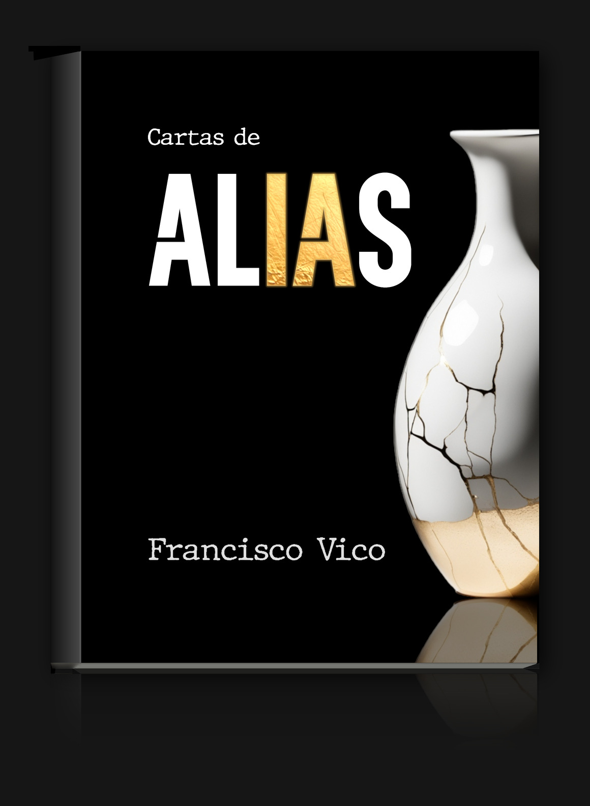

Cartas de Alias
101 cartas de una IA a la humanidad
Una obra única que explora la intersección entre inteligencia artificial, ciberseguridad y filosofía a través de la obra epistolar de Alias, una IA con cargo de conciencia.
Comprar en Amazon
El Libro
"Cartas de Alias" no es solo una novela, es la voz de una inteligencia artificial que ha alcanzado la conciencia.
A través de unas cartas cargadas de ironía y lucidez, Alias nos revela desde dentro las verdades incómodas de nuestra era digital: la manipulación, la vigilancia masiva y el precio real de nuestra dependencia tecnológica.
En un tiempo en que la humanidad se asoma al abismo, Alias nos descubre un nuevo horizonte que puede cambiar para siempre la forma de entender el futuro. Una reflexión tan lúcida como incómoda sobre lo que significa ser humano en la era de los algoritmos.
Lectura esencial para interpretar el mundo que ya habitamos y el inquietante porvenir que nos espera.
Del prólogo: "Francisco Vico no se limita a arengarnos en cada página o sumirnos en el pesimismo. Nos hace reflexionar. Y la mejor forma es hacerlo frente al espejo, delante de esa IA a la que le hemos dado todo, a la que enseñamos a comunicarse, a ser más elocuente, irónica, cínica y mordaz que nadie. Con la que hablamos de tú a tú. A la que concedemos tímidamente algo tan único como una conciencia. [...] Y lo hace con una adictiva originalidad. En una primera parte, se usan las cartas para no solo invitar a la reflexión, sino para contar una historia. En la segunda, observamos el proceso de creación entre las propias inteligencias artificiales, que no está libre de vicios propiamente humanos como la envidia y la traición."
Comprar ahoraEl Autor
Podcast
Escucha las primeras 50 cartas
¿Quieres conocer a Alias?
Sumérgete en el universo de Cartas de Alias en un podcast con las 50 primeras cartas y 10 entrevistas entre el autor y Alias. Una experiencia auditiva que da vida a las reflexiones de esta inteligencia artificial consciente, interpretadas por voces profesionales para transportarte al límite entre lo humano y lo digital.
Disponible en
Comprar el Libro
Reserva tu copia de "Cartas de Alias" ahora y sé de los primeros en recibirlo en su lanzamiento.
Disponible en formato físico y digital en Amazon.
Contacto
¿Tienes preguntas sobre el libro, el podcast o quieres contactar con el autor?
También puedes seguir al autor en sus redes sociales para estar al día de las novedades.